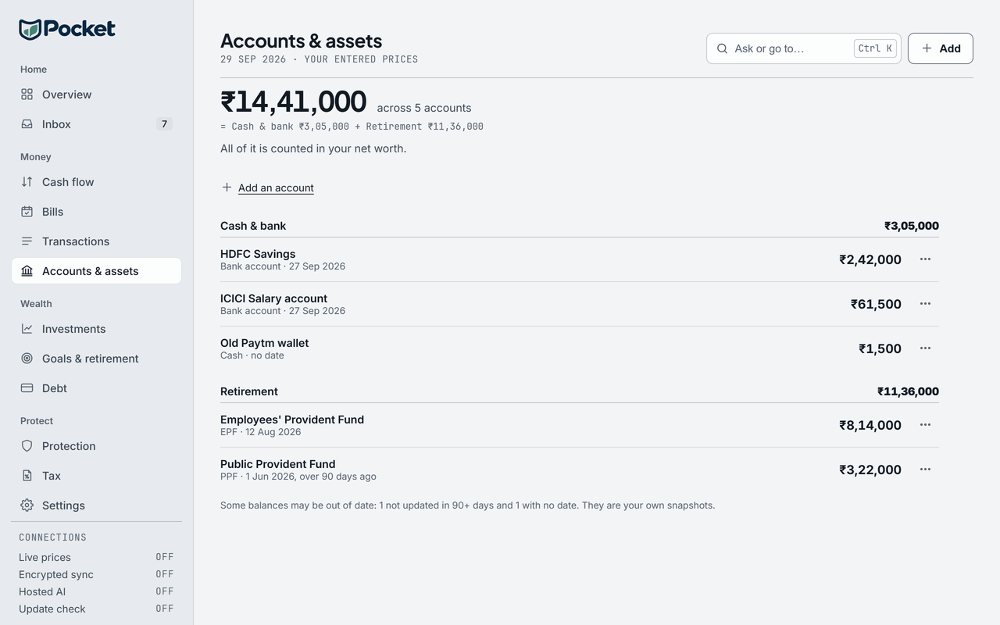

How your EPF grows
- Category
- Retirement
- By
- Reviewed
- Read
- 6 min
What goes in each month
EPF is worked out on basic pay (basic plus any dearness allowance). On a basic of ₹40,000 a month:
- Your share12% of basic₹4,800
- Your employer's share12% of basic₹4,800
- Into the account24% of basic₹9,600
- In a year× 12₹1,15,200
Two scheme rules decide how much of this reaches the EPF account itself:
- The pension scheme's part. For a member of the Employees' Pension Scheme, 1995, 8.33% of pay up to ₹15,000 a month, at most ₹1,250 a month, goes from the employer's share to the pension scheme. The rest of it goes to EPF. Someone who first joined EPF on or after 1 September 2014 with pay above ₹15,000 is not a member, and the employer's whole 12% goes to EPF.
- The wage ceiling. Some employers work both shares out on ₹15,000 a month, the scheme's wage ceiling, which makes each ₹1,800. A payslip shows which.
Pocket's projection below counts the full 24% of basic going into the account: the case with no pension-scheme part and no ceiling.
How it grows
₹9,600 a month at 8.25% a year, with nothing withdrawn and the basic unchanged:
| Years | Paid in | Balance | Of which interest |
|---|---|---|---|
| 5 | ₹5,76,000 | ₹7,14,875 | ₹1,38,875 |
| 10 | ₹11,52,000 | ₹17,93,234 | ₹6,41,234 |
| 15 | ₹17,28,000 | ₹34,19,894 | ₹16,91,894 |
| 20 | ₹23,04,000 | ₹58,73,644 | ₹35,69,644 |
| 25 | ₹28,80,000 | ₹95,75,024 | ₹66,95,024 |
| 30 | ₹34,56,000 | ₹1,51,58,405 | ₹1,17,02,405 |
After 30 years, ₹34,56,000 has been paid in and the balance is ₹1,51,58,405. The interest, ₹1,17,02,405, is more than three times what was paid in, because each year's interest earns interest in the years after it. The last five years alone add ₹55,83,381, more than the whole balance after the first fifteen, ₹34,19,894.
The first year, month by month
Pocket adds each month's money at the start of the month and a month's interest, 8.25% ÷ 12 = 0.6875%, on the balance:
- month 1: ₹9,600 × (1 + 0.6875%) = ₹9,666;
- month 2: (₹9,666 + ₹9,600) × (1 + 0.6875%) = ₹19,398;
- and so on, each month's balance carrying into the next.
| Month | Paid in so far | Balance |
|---|---|---|
| 1 | ₹9,600 | ₹9,666 |
| 2 | ₹19,200 | ₹19,398 |
| 3 | ₹28,800 | ₹29,198 |
| 4 | ₹38,400 | ₹39,065 |
| 5 | ₹48,000 | ₹48,999 |
| 6 | ₹57,600 | ₹59,002 |
| 7 | ₹67,200 | ₹69,074 |
| 8 | ₹76,800 | ₹79,215 |
| 9 | ₹86,400 | ₹89,425 |
| 10 | ₹96,000 | ₹99,706 |
| 11 | ₹1,05,600 | ₹1,10,057 |
| 12 | ₹1,15,200 | ₹1,20,480 |
Each figure is worked out to the paisa and rounded to the rupee only to be shown. A month's line can differ by a rupee from adding the rounded figures above it.
If the rate is different
EPFO declares the interest rate for each financial year: 8.10% for 2021-22, 8.15% for 2022-23 and 8.25% for 2023-24 and 2024-25.
Its trustees fixed 8.25% again for 2025-26 in March 2026, and the finance ministry concurred. Small differences in the rate grow large over decades. The same ₹9,600 a month for 30 years:
| Rate a year | After 30 years | Of which interest |
|---|---|---|
| 7.5% | ₹1,30,16,323 | ₹95,60,323 |
| 8.25% (Pocket's assumption) | ₹1,51,58,405 | ₹1,17,02,405 |
| 9% | ₹1,77,06,951 | ₹1,42,50,951 |
What the projection assumes
- 24% of basic every month: your 12% and your employer's 12%, all of it in the account.
- The same basic for all the years. A rise in pay raises both shares from then on, so a balance with pay rises would be larger than this one.
- One rate, 8.25% a year, added monthly. EPFO works interest out on the monthly balances and credits it once a year, at the end of the financial year. A passbook therefore builds a little more slowly than a balance with interest added every month.
- A balance that starts at nothing, with nothing taken out. Withdrawal rules, and how EPF is taxed, are outside this guide.
How Pocket works it out
The figures on this page are Pocket's own, from the app's engine when the page was built.
The contributions come from the same code as the Income page's EPF lines, and the balances from its EPF projection. In the app, Income splits EPF into your share and your employer's from your payslip. Where the payslip has no employer line, it shows 12% of basic, labelled assumed. Your EPF balance itself goes in Accounts & assets, with the date it stands at. There it counts in your net worth and in the corpus the Goals page projects your retirement from.

- The accounts' total, and the groups it adds up from.
- Each balance names the date it stands at, or says it has none.
Questions
How much goes into EPF each month?
12% of basic pay from you and 12% from your employer: on a basic of ₹40,000, ₹4,800 each, ₹9,600 a month and ₹1,15,200 a year. For a member of the Employees' Pension Scheme, part of the employer's share goes to the pension scheme instead.
What interest rate does Pocket's EPF projection use?
8.25% a year, added each month at 8.25% ÷ 12 on the balance. EPFO declares the rate each financial year; the projection holds one rate for every year, as an assumption, not a prediction.
Why can a passbook show less than the projection?
The projection adds interest every month, while EPFO works interest out on the monthly balances and credits it once a year, so a passbook builds a little more slowly. It also counts the full 24% of basic. Where part of the employer's share goes to the pension scheme, or both shares are worked out on ₹15,000 a month, less goes in.
Sources
- The Employees' Provident Funds Scheme, 1952: the 12% shares, the ₹15,000 wage ceiling, and interest worked out on the monthly balances and credited at the end of the year
- The Employees' Pension Scheme, 1995: the employer's 8.33% to the pension scheme, at most ₹1,250, and who is a member
- EPFO: the interest rate declared for each financial year
Previous guide: NPS and 80CCD(1B), worked through